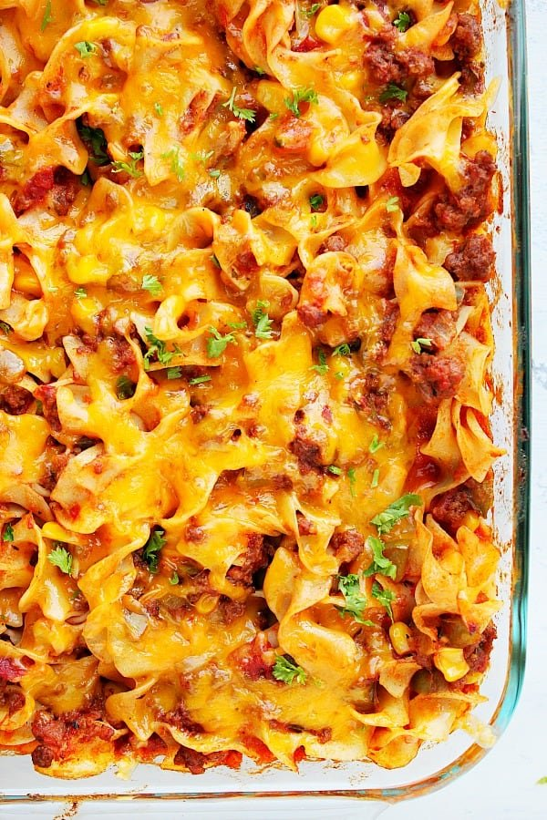

Grandma's Cheesy Noodle Casserole

Description
This is the perfect comfort casserole that grandma always made growing up. It's nice and cheesy and super easy to make!!! Also lasts several meals so good for meal prepping.
Ingredients
- 1 pound ground beef
- 1 can corn
- jar of ragu (medium)
- half can of black olives
- wide egg noodles (medium bag)
- basil
- parsley
- garlic powder
- cheddar cheese (medium)
Steps
- Preheat oven to 375 degrees.
- Boil egg noodles until al dente.
- Cook ground beef in a skillet and season with salt, pepper, and garlic powder.
- Mix noodles, beef, corn, ragu, black olives, basil, parsley, and garlic powder together and put in glass casserole dish. Top with shredded cheddar cheese.
- Bake at 375 degrees for 25-30 minutes.